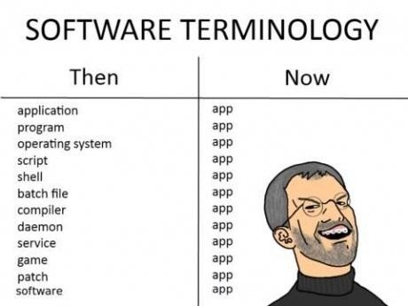

The Internet is Serious Business!
Home > Computers, Technology, and Internet > The A-Word

(Note that I strongly support freedom of speech, and would therefore never, ever try to police or otherwise control any aspect of any person's speech; I am merely expressing my opinion here, and if you agree with it, then please feel free to adjust your language accordingly.)
I am getting quite sick and tired of the word app being everywhere these days. It is technically a shortening of the word application (in the software sense), and, as far as I know, it first started to be used widely in the smartphone/mobile world—by Apple in particular—with the phrases smartphone app
and mobile app
, which are used to describe application programs that are developed exclusively (or primarily) for smartphones. This would have been fine, at least, if the word—which sounds childish, just like the entire mobile/smartphone software world (yes, I said it—problem?)—didn't spread to other areas of software, but, unfortunately, that has not been the case.
Of course, the word existed and was used prior to the rise of smartphones; for example:
AppData which has been included in all versions of Windows since Vista (the path is usually C:\Users\$USER$\AppData).These days, however, usage of the word has spread beyond the smartphone world, and we hear phrases like Web app
and cloud app
all the time. Even the great Microsoft has, unfortunately, jumped on the bandwagon and started throwing the word around everywhere: since Windows 8, they have started pushing those apps
that are purchased from the Windows Store, and the word is all over the place in Windows 10.
I do not know why anybody would stain their lips with a word that, in the software sense, reeks with the lowly reputation of the smartphone world. An app is something that you would call a trivial little program developed for a smartphone; to apply it to, for example, a compiler or operating system (which are very complex pieces of software)—or, really, any program outside of the smartphone world—is an insult to the programmers who built it. (The word is quite fitting for the programs made by mobile developers, though, who work in an insignificant field with absolutely no prestige.)
Perhaps if Apple's iPhone were never released, then the current-day smartphone would never have materialized, and the word would never have caught on in the mobile world, much less the entire software scene. Once again, we see that Apple is the root cause of another problem in the world.


 All written materials on this Web site are my own, and all are released under the Do What the Fuck You Want to Public License Version 2.
All written materials on this Web site are my own, and all are released under the Do What the Fuck You Want to Public License Version 2.
This page last modified on 25 March 2021.